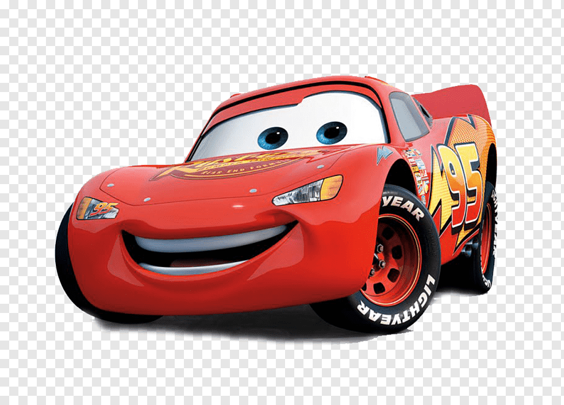

I början av filmen är Blixten McQueen en arrogant och spydig ung racerbil med välsmort munläder, som är väldig självisk, speciellt mot sitt eget team (som gör så att de slutar). Han hoppas blir den första nybörjaren som vinner Pistongcupen och får ett fint sponsoravtal med Dinoco, men racet slutar oavgjort med kronprinsen inom racing "Chick Hicks" och veteranen Lasse Chassi, "Kungen" efter att ha förlorat sin stora ledning för två sprängda däck.
På väg till Kalifornien för ett nytt avgörande race blir han avledd till Route 66 och Kylarköping, en nära nog övergiven stad som när Interstate 40 byggdes utanför staden förlorade all trafik genom staden
McQueen förstör genom en olycka på stadens huvudväg och invånarna i staden kräver att han ska laga den.
Allt eftersom hans vistelse i staden bilr han vän med invånarna, och han blir kär i den före detta advokaten Sally. Han träffar även på stadens doktor och domare, den före detta racerbilen Doc Hudson som han hyser stor respekt för.
Dessa erfarenheter får McQueenatt inse hur viktigt det är med vänskap och kärlek, och att berömmelse inte är det viktiga i livet.
När McQueen väl kommer till Pistongcupen i Kalifornien - med sina vänner från Kylarköping som team i depån - kommer han först till mållinjen före Chick Hicks och Kungen. Men efter att Blixten ha sett Kungen tappa kontrollen och Krascha (Chick trycker av Kungen medvetet) och då kom Blixten ihåg hur en krasch hade förstört Docs karriär, så stannar han före mållinjen. Istället så låter han Chick vinna cupen och bestämmer sig för att hjälpa Kungen över mållinjen för att kunna gå i pension med värdigheten i behåll. Efter att Kungen påminde McQueen om att han gav upp Pistongcupen så framför Blixten något han minns att Doc sagt "En gammal racingbil jag känner har lärt mig att det bara är en tom puckal". McQueen får enormt mycket respekt från publiken för sitt agerande, och trots att han inte vann tävlingen så blir han erbjuden kontrakt med Dinoco efter att Chick blivit nekad möjligheten för sitt fuskande. Men McQueen bestämmer sig för att stanna hos sin första sponsor, Rost-i-väck och flytta sitt högkvater till Kylarköping. Tack vare Blixten engagemang så kommer en massa turister till Kylarköping och stadens räddas.
| Modell: | Blandning mellan Corvette C1 och Corvette C6. |
| Kön: | Man |
| Färg: | Röd |
| Röster: | Owen Wilson " / " Martin Stenmarck |
| Reg. plåt: | (95) |